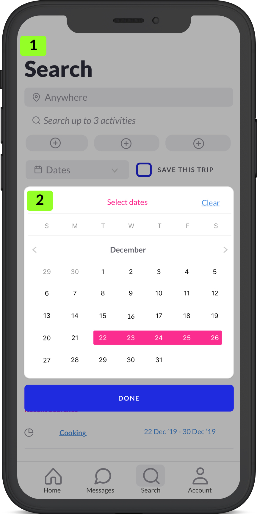
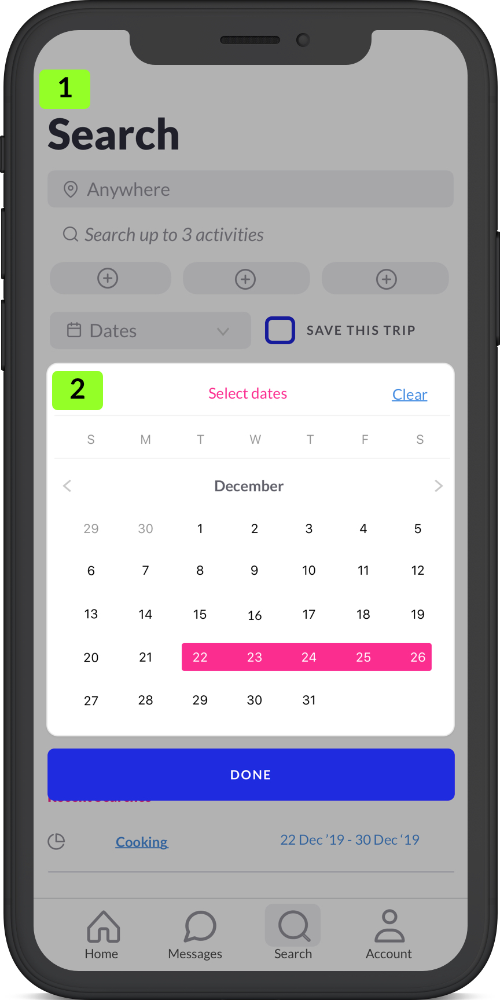

PROJECT OVERVIEW
Activo is a project that was created during my time as a Design student with Bloc. I had full creative freedom to execute my design process on this passion project. Activo is an application built for travelers. It solves the problem of not being able to have a culturally immersive experience while traveling, or simply put, "travel like a local." As traveling becomes more accessible and widespread, users expectations for their travel experiences change, and this is a problem that I have identified as a consequence of these changing circumstances. Being a passion project, I had a lot of fun developing this idea into a working prototype. Below you can quickly jump to a section to read more about the different stages of my design process, or scan through the whole thing as you please.
-

-
MY ROLE
-
UX Research
-
Branding
-
Visual Design
-
Protoyping
-

-
DELIVERABLES
-
User Surveys
-
Personas
-
Competitive Analysis
-
Brand Identity
-
User Stories & Flows
-
Wire-Frames
-
User Testing
-
Visual Design
-
TOOLS
-
Sketch
-
Invision
-
Usability Hub
DISCOVERY
PROBLEM
After discovery was completed, the following problem was unveiled:
(1) travelers want a local perspective and experience but don't know any locals
(2) meeting strangers in a foreign city is difficult, and can be awkward
From this feedback the problem was identified: travelers need a tool to help connect them with locals, that also bridges the gap of uncomfortability in meeting a stranger.
SOLUTION
An application that allows travelers to find local people that advertize activities, so that the traveler can get a local experience, while also reducing social uncomfortability of meeting a new person by setting the expectation of sharing an activity together. This solution offers the user an experience that offers the user a better understand local life, and create a meaningful memory and relationship while traveling.


 
